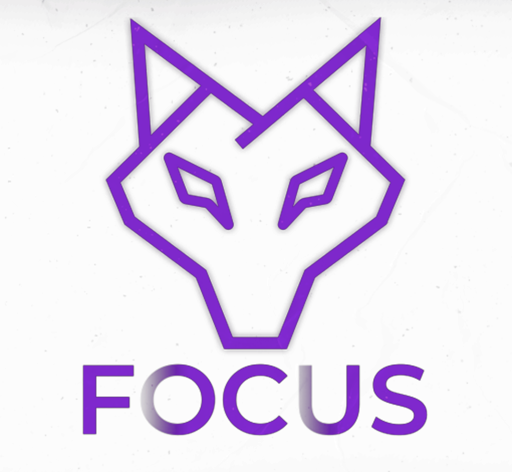

01 / 08Como negócios locais bons perdem cliente todo dia sem nem perceber — e o que muda quando você passa a aparecer.
Digitou o nome do seu serviço na sua cidade. O que apareceu? Três concorrentes, um mapa, um monte de avaliação. Você não estava lá.
É o melhor marketing que existe — e tem um teto. Ele para onde a sua rede de contatos para. Quem está um passo além nunca ouve o seu nome.
A pessoa recebeu seu nome, foi pesquisar pra confirmar e esbarrou em quem investiu pra aparecer. Você perdeu uma venda que era sua — sem nem saber que ela existiu.
Se nessa busca você não aparece, a decisão acontece sem você na mesa.
Não é sobre seguidor ou dancinha. É estar visível exatamente quando alguém está decidindo comprar aquilo que você vende.
Anúncio que coloca seu nome na frente de quem está procurando, e uma presença que confirma que você é a escolha certa. A indicação vira reforço — não a sua única fonte de cliente.
A Focus faz um diagnóstico da sua presença digital — sem compromisso.
Chama no direct → @focusprogress